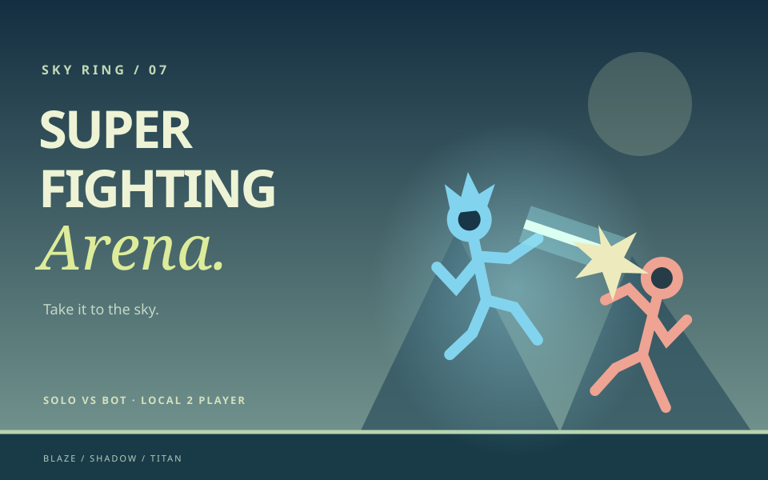

Move, fly & dash
P1 uses WASD; P2 uses arrows. Tap Up to jump, hold it to fly, Down fast-falls, and double-tapping a direction dashes for 20 energy. Land to recharge. Touch uses a movement stick with Up for flight and double taps for dash.
FROM THE BILLA CHUHA COLLECTION
Choose Blaze, Shadow or Titan and take the fight to a 1400 by 800 sky arena. Fly, air dash, teleport, shield and chain four basic attacks with six energy powers, including charged beams and ground shockwaves. Fight a bot at four difficulty levels or a friend on the same device with independent keyboard and touch controls. Two round wins take the best-of-three match, with 90 seconds per round. Original procedural stick-warrior art, energy auras, beam clashes and optional sound bring each hit to life. Online 1v1 is planned for a later phase. The original sword arena remains at fight.html.

P1 uses WASD; P2 uses arrows. Tap Up to jump, hold it to fly, Down fast-falls, and double-tapping a direction dashes for 20 energy. Land to recharge. Touch uses a movement stick with Up for flight and double taps for dash.
P1: F attacks, G is Special 1, H is Special 2. P2: L attacks, K is Special 1, J is Special 2. Attack alone punches; Up + Attack uppercuts, Down + Attack kicks on ground or slams in air. Tap Special 1 for a blast, hold for a charged beam, or combine with Up for Rising Dragon.
Tap Special 2 to teleport behind the opponent, hold it for an energy shield, or use Down + Special 2 in the air for Ground Pound. Left Shift blocks for P1; Right Shift blocks for P2. After five incoming hits, teleport can escape stun if you have 25 energy. P / Escape pauses. Move list shows damage, costs and every input.
Solo offers Easy, Normal, Hard and Impossible bots. Local 2 Player shares one keyboard or independent touch controls on one device. Two round wins take the match; draws replay the round. Timeouts compare remaining health percentage. Blaze charges beams faster, Shadow has no teleport cooldown and Titan has more health and a wider Ground Pound. Online play is a later phase.